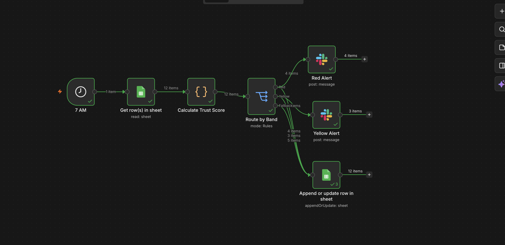

Client Trust Score: Flagging Disengaged Clients Before They Churn
A rule based scoring prototype exploring whether two metrics a company already tracks, adoption and retention, could be connected into a single early warning signal.
Domain
Customer Success / Retention Analytics
Core Stack
n8n • Google Sheets • Looker Studio • Slack API
Problem Statement
I came across a company (referred to here as Greenovative) whose public product materials stated an 85% recommendation adoption rate alongside a 95% client retention rate. Reading those two numbers side by side raised a question for me: is there anything connecting them, so that a client whose adoption is falling actually gets flagged before it shows up in a renewal conversation.
I didn't have visibility into their internal tools, so I couldn't confirm whether that gap exists. What I could see was that nothing in the public materials pointed to a churn prediction or account health system, and a 15% adoption gap across 200+ enterprise clients felt worth exploring as a working prototype rather than just a written pitch.
What I Designed
I built a Client Trust Score, a single number from 0 to 100, made up of four signals tied to how engaged a client actually is day to day.

[ Image Error: Greenovative_n8n_workflow.png not found ]
Login Recency: days since the client last opened the dashboard, as an early signal of disengagement.
Adoption Rate: the percentage of recommendations a client actually acts on.
Adoption Trend: the change in adoption rate over time, so a client who's always been moderately engaged isn't treated the same as one who's actively dropping off.
Trust Flagged Tickets: support tickets that specifically mention hesitation or distrust toward the product's recommendations, rather than a generic sentiment tag that would treat a routine bug report the same as a trust complaint.
Each client then lands in one of three bands. The full reasoning behind the 0.30 / 0.35 / 0.20 / 0.15 weighting is in the PRD linked below, since it has more nuance than fits cleanly here.
Band
Score Range
What It Triggers
🔴 Red
0 to 44
Urgent alert, account manager call within 48 hours
🟡 Yellow
45 to 69
Watch list alert, CS check in within 5 business days
🟢 Green
70 to 100
Logged silently, no alert, to avoid alert fatigue
"This case study was built as part of my interview process with Greenovative, starting from a public metric and building a prototype to explore a potential operational gap."
How It Works
I built this as an n8n workflow, structured in six steps.
Trigger: a schedule node fires once a day, so the check runs without anyone remembering to start it.
Data Collection: a Google Sheets node reads the four signals per client. In this prototype, that sheet holds invented sample data built to resemble a real client base; in an actual deployment, this node would point to real usage logs, adoption tracking, and a ticketing system instead.
Scoring Logic: a code node applies the weighted formula and assigns each client a score and a band.
Decision Routing: a switch node sends Red and Yellow clients down different alert paths, while Green clients are logged silently.
Alerting: a Slack node posts the flagged client, their score, and the specific reason for the flag.
Logging: a Google Sheets node, fed by all three routing paths, writes each client's latest score, band, and flag reason to a Score History tab, the same tab the dashboard reads from.
Key Design Decisions
Rule based scoring over a machine learning model: I chose a transparent formula over an ML model because it's explainable to a non technical stakeholder and doesn't require historical training data I didn't have access to.
Daily batch over real time: client disengagement tends to develop over days or weeks, so a daily check is enough, and it costs far less to run than a real time pipeline.
Trust flagged tickets over generic sentiment: a routine question and a client saying they no longer trust the product's recommendations are very different risk signals. I designed this specifically to catch the second case, rather than relying on tone alone.
Unvalidated weights, treated as a hypothesis: the weighting across the four signals is a starting point based on product reasoning, not a number derived from real churn history. I'd want to validate it against actual data before treating it as final.
What This Demonstrates
Starting from a real, cited metric and reasoning through which signals would actually predict the outcome I cared about.
Being upfront about where my own assumptions are strongest and weakest.
Taking a problem past the slide deck stage into something that actually runs, using tools that fit how small teams build internal automation today.